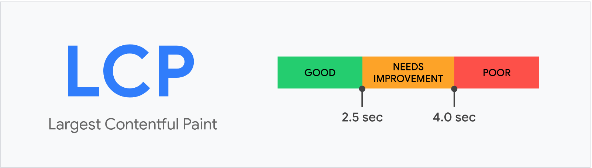
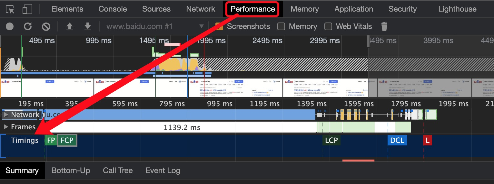

1. 初识前端性能参数
参考各种资料，各种文档，思考判断后觉得以下的标准更合理：
- 页面加载速度——多快能出画面
- 加载响应速度——多快能操作
- 交互响应速度——操作的反馈速度
- 视觉稳定性——界面稳定，元素位置不会因为加载而“乱动”
- 交互平滑度——动画、过渡是否流畅
上边这些都是感知上的，但无法通过这些指标来测量性能。所以我们以下边的一些公认的可量化的指标来测量：
- FCP：从页面开始加载到屏幕上呈现页面内容的时间。
- LCP：从页面开始加载到屏幕上最大的文本块或图像元素被渲染的时间。
- FID：测量从用户首次与您的网站进行交互到浏览器真正能够访问之间的时间。
- TTI：衡量从页面开始加载到可视化呈现之间，它的初始脚本（如果有）已加载以及可以可靠地快速响应用户输入的时间。
- TBT：测量主线程被阻塞足够长的时间以防止输入响应的FCP和TTI之间的总时间。
- CLS：衡量在页面开始加载到页面生命周期状态变为隐藏之间发生的所有意外布局转移的累积分数。
2. 详解参数
2.1 FP&FCP - First Paint & First Contentful Paint
一般用FCP来衡量即可，FP一般都在FCP之前：
- FP 记录页面第一次绘制像素的时间
- FCP 记录页面首次绘制文本、图片、非空白 Canvas 或 SVG 的时间
FCP指标:
- 0-2s: Good
- 2-4s: Need Improvement
- 4s以上: Poor
2.2 LCP - Largest Contentful Paint
LCP指标代表的是视窗最大可见图片或者文本块的渲染时间。
这个性能指标，可以测试用户感知到的页面加载速度，更可以让用户感受到这个页面的可用性。

- LCP的官方api：https://wicg.github.io/largest-contentful-paint/#sec-largest-contentful-paint-interface
- 插件：https://github.com/GoogleChrome/web-vitals
2.3 TTI - Time To Interact
TTI指的是页面可交互的时间。简单的说呢，就是页面从加载开始，到最快能操作的时间。
在谷歌浏览器上没有办法直接看到，但是可以使用api计算
1 | var timing = window.performance; |
3. 如何测试
1.可以使用谷歌的performce，来查看性能。

Timings 里FP FCP LCP DCL 等参数，做重点分析。
- 可以使用爬虫来抓，请见下篇文章《前端性能爬虫方案》
参考：
《以用户为中心的性能指标》- Google
《Best Practices for Speeding Up Your Web Site》- yahoo
《解读新一代 Web 性能体验和质量指标》- segmentfault